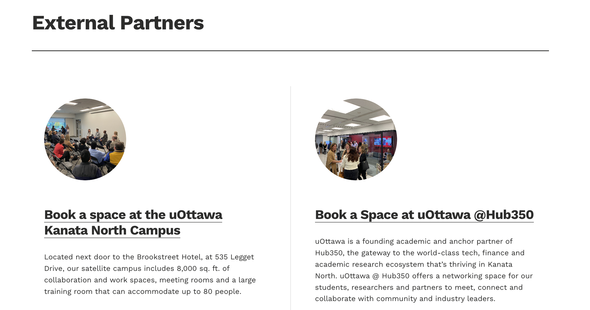
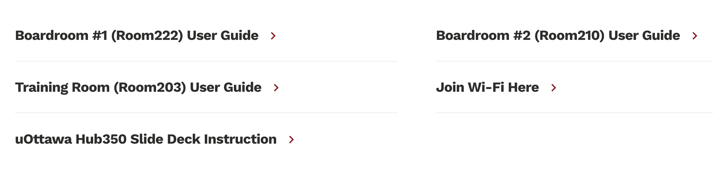

Ecosystem Events Page
Created a dedicated “Ecosystem Events” page on the company’s website to centralize
and highlight events related to the University of Ottawa Kanata North campus. This
page serves as a dynamic hub for promoting collaboration between academia and
industry, increasing visibility of joint initiatives and strategic partnerships.
UX Redesign of “Reserve Campus Space” Page
Redesigned the layout of the “Reserve Campus Space” page to improve navigation and
user engagement. The previous template led to a high rate of misclicks. After
restructuring the content and layout, user accuracy in finding the correct
reservation links significantly increased.
Full Redesign of the Innovation Support Services Website
Led the complete redesign of the Innovation Support Services (ISS) department
website, which had not been updated in years. The outdated content and disorganized
structure were fully re-evaluated and transformed. I managed the entire process
end-to-end — from initial stakeholder meetings and content auditing to UX design,
layout restructuring, and final implementation. The result is a clean, updated, and
user-friendly site that reflects the department’s current services and goals.
Redesigning the External Booking Page for Efficiency
Redesigned the “Book a Space” webpage for external partners to improve user
experience and streamline the reservation process. Previously, the form collected
only a company name and email address, requiring manual follow-ups. The updated
version gathers relevant booking details upfront, reducing back-and-forth
communication and enabling faster confirmations.

Web-Based Room User Guides with Verified Content
Transformed outdated, document-based room user guides into individual, shareable web
pages. Each guide was manually verified and updated through hands-on testing to
reflect current equipment and room setups. This improved both the accessibility and
accuracy of room usage instructions for all users.

In-Room QR Code System for User Guides
Implemented a bilingual QR code system for each room’s AV user guide, linking
directly to the verified web pages. QR codes were printed and installed on foam
boards inside each room, allowing users to instantly access step-by-step instructions
without navigating the website. This significantly reduced the need for technical
support and streamlined the room setup process.